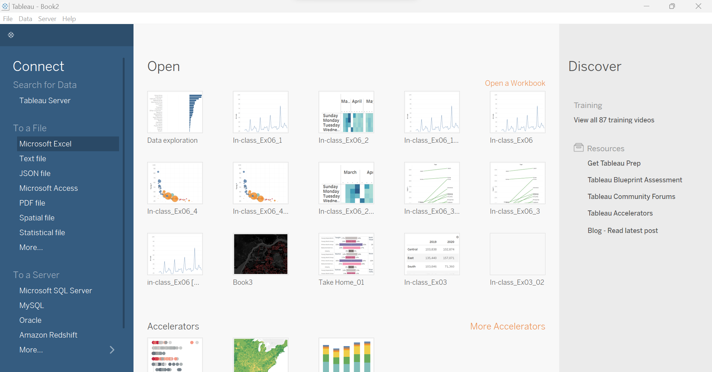
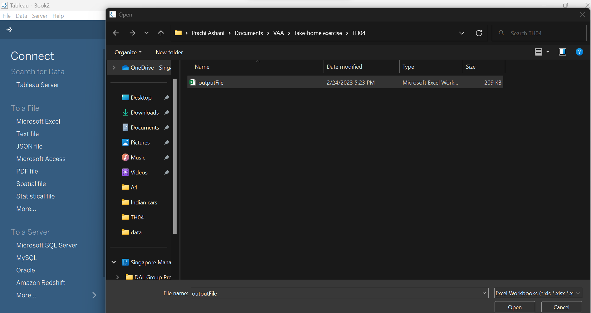
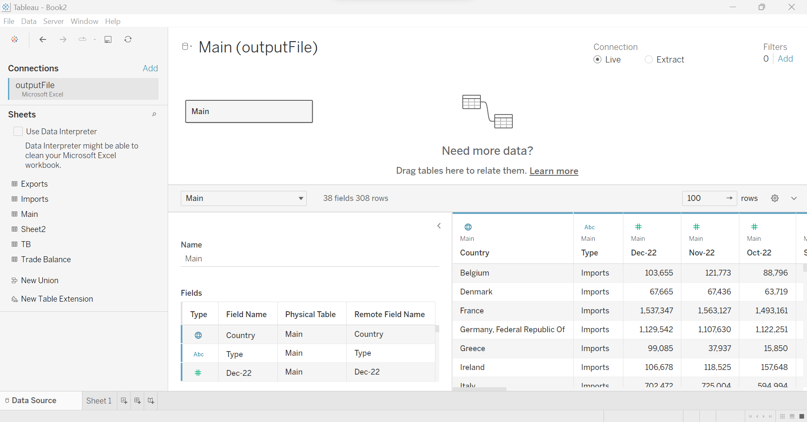
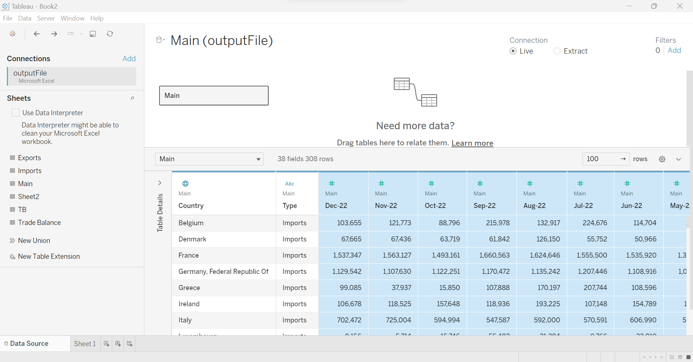
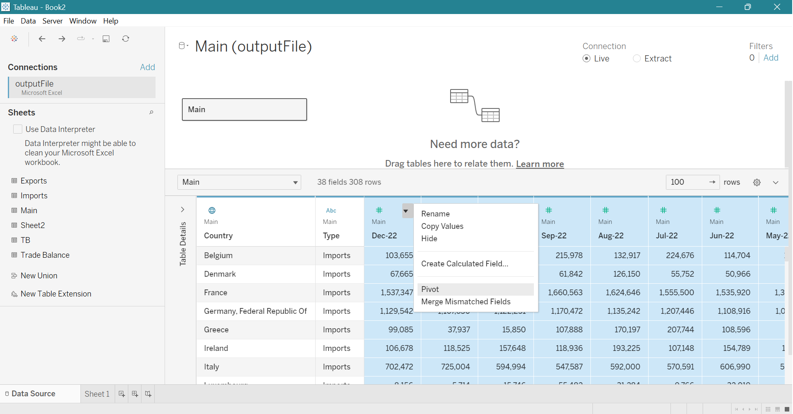
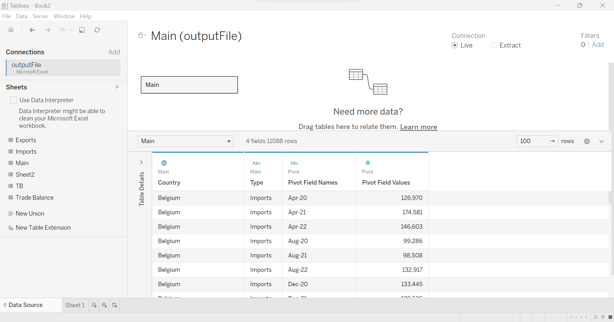
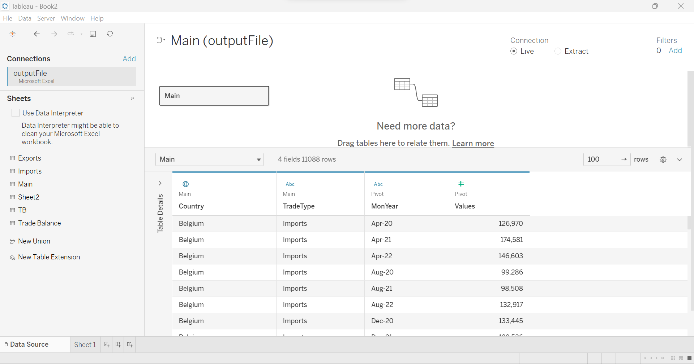
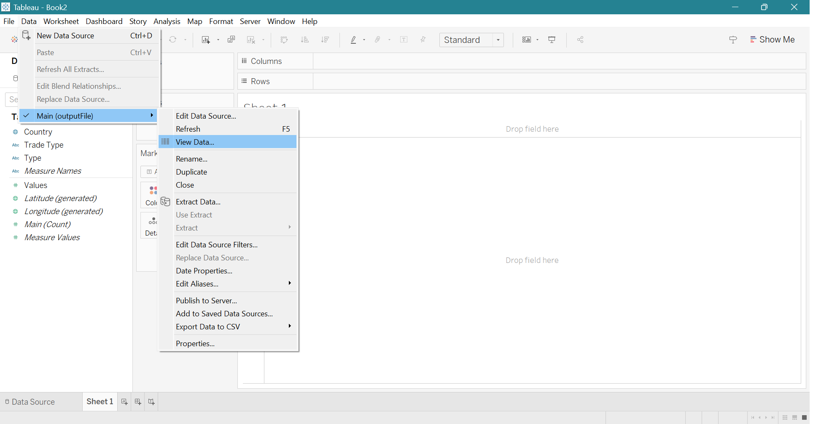
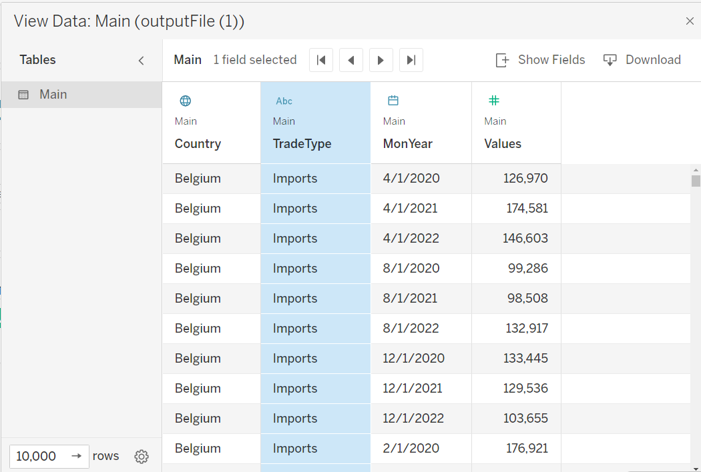

pacman::p_load(ggstatsplot, readxl, performance, parameters, see, FunnelPlotR, plotly, knitr, crosstalk, DT, ggdist, gganimate, ggpubr, hrbrthemes, ggridges, ggiraph, viridis, patchwork, scales, treemap, testthat, Hmisc, tidyverse, lubridate, ggthemes, gridExtra, CGPfunctions, ggHoriPlot, data.table)Take-home Exercise 4
Assessing the impacts of the Global Economy, Political Dynamics and COVID-19 on Singapore’s Bilateral Trade in 2022
The Task
In this take-home exercise, weare required to uncover the impact of global economics, political dynamics and COVID-19 on Singapore’s bi-lateral trade (i.e. Import, Export and Trade Balance) in 2022, by using appropriate analytical visualisation techniques learned in Lesson 6: It's About Time.
The Data
For the purpose of this take-home exercise, Merchandise Trade provided by Department of Statistics, Singapore (DOS) will be used. The data is available under the sub-section of Merchandise Trade by Region/Market. The study period chosen is between January 2020 to December 2022.
Data Wrangling and Preparation
Step 1: The Merchandise Trade by Region/Market dataset is downloaded from this DOS website (link).
Step 2: Only country level details are retained in 1000 Dollars and region level details (America, Asia, Africa, Europe, and Oceania) are eliminated as the focus is on countries.
Step 3: Next, trade balance data for a country is calculated using the formula Trade Balance = Exports - Imports,for all countries.
Step 4: All trade parameters - import, export, and trade balance - for all countries are combined in one MS Excel worksheet from January 2020 to December 2022.

However, to analyze the data, it is better to pivot the time and corresponding trade value columns. We do this using Tableau.
Step 5: Load the MS Excel file in Tableau.


Step 6: Drag and drop the ‘main’ worksheet to the table shelf.

Step 7: Select all the date columns from Dec 2022 to Jan 2020 for pivoting.


Step 10: Rename the ‘Type’ column name to TradeType, ‘Pivot Field Name’ column name to MonYear, and ‘Pivot Field Value’ column name to Value.


Step 9: In ‘Sheet1’, click on ‘Data’ tab in the menu bar, click on the MS Excel file name, click on ‘View Data’.

Step 9: Once the ‘View Data’ panel opens, click on ‘Download’ to export the pivoted data file.

Installing the R Packages
Importing the Dataset
We now import the pivoted dataset for analysis in R.
data <- read_csv("data/tradedata.csv")